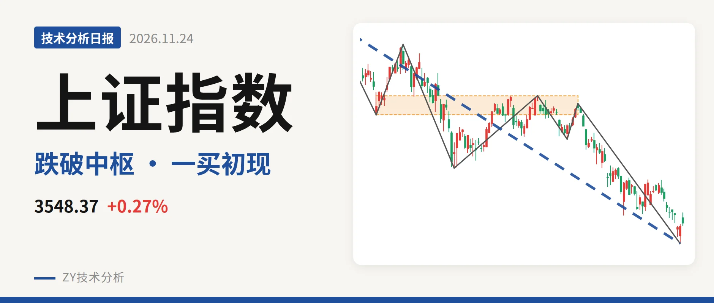
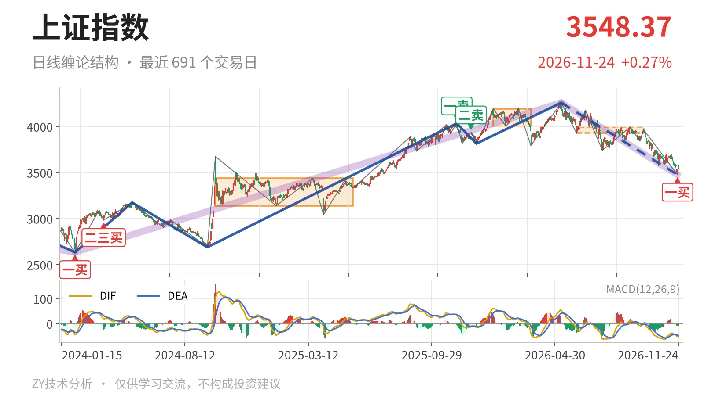
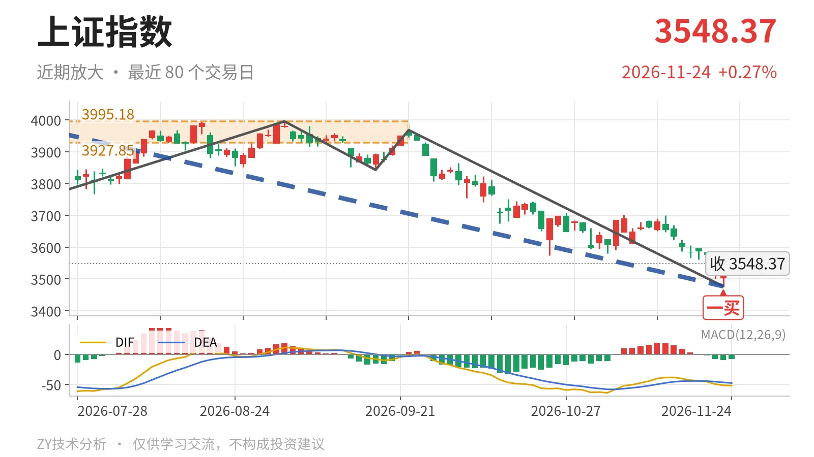

上证指数｜跌破日线中枢，3477点一买后反抽未成笔

最近日线中枢 3927.85—3995.18点，收盘位于中枢之下
一句话：日线下跌线段未见背驰，3476.65点一买后反抽未成笔。
📉 走势结构：更大级别仍是回调，日线下跌段未结束
当前更大级别仍处于2024年2月5日至2026年5月14日上涨走势的延续阶段，该上涨段从2635.09点升至4258.86点，尚未走完。5月14日至11月23日的下跌走势只是其中的回调段，同样没有结束。落到日线线段，5月14日至11月23日从4258.86点跌至3476.65点，已经包含7笔，仍在延续；其中9月22日至11月23日的下跌笔已经结束。11月24日最高3585.22点、最低3539.01点，只有一根K线，未形成新的日线笔。因此当下不是日线下跌线段结束，只能先看末段反抽。

🧭 中枢与位置：中枢下移，价格低于下沿
最近日线笔中枢为6月8日至9月22日，区间3927.85—3995.18点，还未完成。最新收盘3548.37点低于下沿3927.85点约9.7%。前一个1月14日至3月23日中枢为4002.78—4190.87点，相比之下中枢明显下移。价格处在最近中枢下方，且未回抽进中枢，说明下跌结构没有改变。更大级别线段中枢2021年7月28日至2023年5月9日区间3312.72—3418.95点，最新收盘仍高于其上沿3418.95点，因此更大级别上涨未坏。
🔄 买卖点：旧卖点降级，11月23日一买已出现
日线笔级别中，11月23日一买在3476.65点，所在9月22日至11月23日下跌笔已经结束。2025年11月14日一卖4034.08点、2025年12月8日二卖3936.31点，因5月14日创出4258.86点新高，已经降为小级别卖点。2024年2月5日一买2635.09点仍是本轮更大级别上涨的起点。当前一买之后只有一根日线反抽，尚未成笔，所以还不足以扭转日线线段。

⚖️ 背驰：同向下跌比较未出现“新低不新弱”
最需要看的一组同向对比是：6月23日至7月20日下跌笔，从4175.35点至3741.11点，绿柱面积289，DIF低点-61.8；9月22日至11月23日下跌笔，从3967.68点至3476.65点，绿柱面积464，DIF低点-64.0。价格创了新低，绿柱面积反而放大，DIF低点也创了新低，不是“新低不新弱”。最新DIF -51.9、DEA -47.8仍在零轴下方，柱体-8.3，下跌动能没有衰减。这组日线笔没有背驰，11月23日一买更依赖本笔以下的结构，而非日线笔趋势背驰。
🔍 关键位置观察：反抽不回3928点则维持三卖结构
上方结构位看3928点附近（对应中枢下沿3927.85点），再上看3995点附近。下方看3477点附近。若反抽不能回到3928点上方，结构上仍属于中枢下方反抽，可构成三卖结构；若能重新站上3928点，则9月22日以来的下跌更可能只是中枢扩展。若反抽能进一步回到3995点附近，中枢震荡结构恢复；若后续再跌破3476.65点，则11月23日一买被破坏，日线下跌线段延续。近端结构偏弱，弱在未背驰、未回中枢、反抽未成笔。
⚠️ 本文为基于公开行情数据的缠论技术结构记录，由程序自动计算并生成，仅供学习交流，不构成任何投资建议。市场有风险，投资需谨慎。